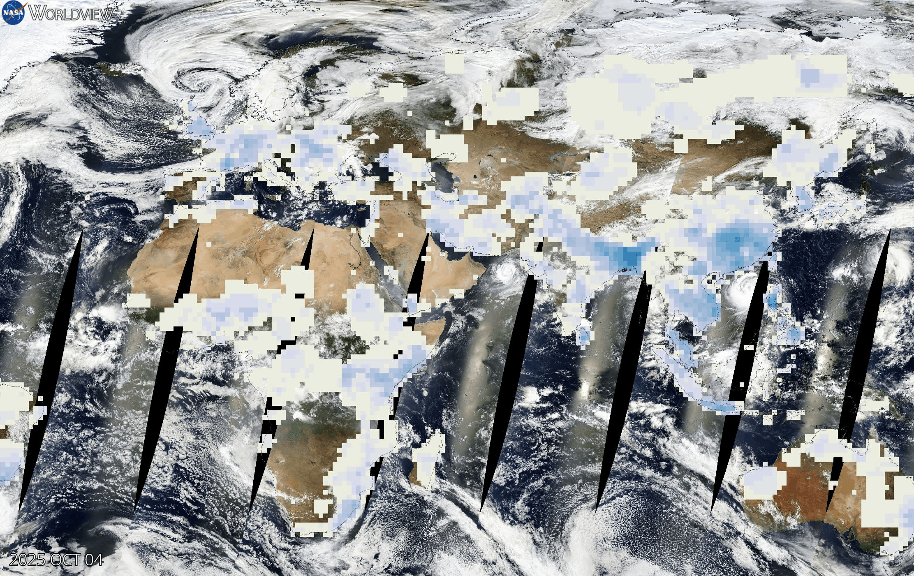

TIDES OF CHANGE
Flood Hazards & Dam Impact: When Water Rises
Water is life—but too much water in the wrong place is disaster. From devastating floods that swallow communities overnight to massive dams that reshape entire ecosystems, humanity's relationship with water is at a breaking point. Climate change is intensifying floods, while our infrastructure choices create new vulnerabilities.
25 YEARS OF FLOOD HAZARD EVOLUTION
Satellite Analysis: 2000-2025
These satellite visualizations reveal how flood-prone areas have expanded dramatically over 25 years. What were once occasional flood zones are now regular disaster areas. Climate change drives more intense rainfall, while urban development eliminates natural flood buffers like wetlands and forests. The red zones show where water accumulates during heavy rains—and where communities face the greatest danger.
2000 Baseline

Limited high-risk zones
2010 Expansion

Growing vulnerability
2025 Crisis
Widespread danger zones
DAM IMPACT: TRANSFORMING RIVER SYSTEMS
Dams fundamentally alter the relationship between rivers and landscapes. These before-and-after comparisons show how large dam projects transform entire regions—creating massive reservoirs, flooding valleys, displacing communities, and changing downstream water flows forever. While dams provide hydroelectric power and water storage, they come with profound ecological and social costs.
Before Dam Construction

Natural river flow & ecosystem
After Dam Construction

Reservoir created, landscape transformed
FLOOD RISK MANAGEMENT VISUALIZATION
Understanding Modern Flood Control Systems
This visualization demonstrates how advanced flood risk management systems work—combining real-time monitoring, predictive modeling, and coordinated infrastructure to protect communities. From early warning systems to controlled water releases, modern technology helps us respond faster—but cannot eliminate the fundamental risks posed by extreme weather and poor planning.
Even the most sophisticated flood management systems can be overwhelmed by unprecedented rainfall intensities—which are becoming more common as the climate changes.
THE SCIENCE OF FLOODING
Understanding the Flood Crisis
Flooding is the most common and costly natural disaster globally. Climate change is making it worse, while human development choices multiply our vulnerability. The science reveals several converging crises:
Climate Amplification
A warming planet doesn't just mean hotter temperatures—it fundamentally changes the water cycle:
- More atmospheric moisture: Each degree of warming increases atmospheric water vapor by 7%
- Intense precipitation: Rain falls harder and faster, overwhelming drainage systems
- Slower storm systems: Weather patterns stall, dumping water in one area for days
- Sea level rise: Higher baseline ocean levels mean storm surges reach farther inland
Urban Development Crisis
How we build cities makes flooding worse:
- Impervious surfaces: Concrete and asphalt prevent water absorption, creating rapid runoff
- Lost wetlands: Natural flood buffers destroyed for development
- River modification: Channelized rivers flow faster, causing downstream flooding
- Building in floodplains: Development in high-risk areas increases casualties and damages
Dam Dilemmas
Dams create complex tradeoffs:
IMPACT ON YOU & YOUR COMMUNITY
Flooding doesn't just damage property—it destroys lives, fractures communities, and creates cascading economic and health crises. Here's how rising flood risks impact real people:
Homes & Property
Floodwaters destroy homes in hours. Water-damaged buildings develop mold, become uninhabitable, and lose most of their value. Families lose everything—possessions, memories, financial security—in a single night.
Economic Devastation
Floods cost over $40 billion annually in the US alone. Businesses close, jobs disappear, infrastructure crumbles. Recovery takes years, and many communities never fully rebuild. Property values in flood zones plummet.
Water Contamination
Floodwaters mix with sewage, chemicals, and toxic waste, creating dangerous health hazards. Drinking water sources become contaminated. Waterborne diseases spread rapidly through affected populations.
Infrastructure Collapse
Roads wash out, bridges fail, power grids go dark. Critical facilities—hospitals, fire stations, schools—become inaccessible. Communities are cut off for days or weeks, with emergency services unable to respond.
Agricultural Loss
Crops are destroyed, soil eroded, livestock drowned. Farmers lose entire seasons of work. Food prices spike. Rural communities dependent on agriculture face economic collapse and food insecurity.
Mental Health Crisis
The trauma of flooding lingers for years. Anxiety, depression, PTSD affect survivors long after waters recede. Children are especially vulnerable. Community bonds fray under the stress of displacement and loss.
COMMUNITY STORIES
Behind flood statistics are people whose lives were upended by rising water. These stories reveal the human cost of our changing climate and infrastructure choices.
Maria's Story: When the River Came
Small Business Owner, Coastal City
"We'd lived here 30 years, never had serious flooding. Then three years ago, the rain didn't stop for four days. The river rose eight feet in six hours. We evacuated with minutes to spare. Our bakery—three generations of work—was under six feet of water. Everything destroyed: ovens, inventory, photos on the wall. Insurance paid a fraction. We rebuilt, but now every heavy rain brings panic. My kids check river levels obsessively. We can't sell the property—who'd buy in a flood zone? We're trapped."
- Maria Chen, Business Owner
Amir's Story: The Dam That Changed Everything
Former Farmer, Reservoir Region
"My village existed for 400 years in that valley. Farms, orchards, a mosque from the 1600s, graveyards where my ancestors were buried. Then the government built the dam. They gave us two months to leave. Compensation barely covered moving costs. Now it's all underwater—a reservoir for a city 200 miles away. They relocated us to land that doesn't know how to grow our crops. The water here is different, the soil is wrong. My children work in factories now instead of farming. We gained electricity for millions, but we lost everything that made us who we were."
- Amir Khan, Displaced Farmer
Jennifer's Story: Flash Flood Survivor
Teacher, Suburban Community
"It was a normal Tuesday. Weather said scattered showers. By noon, six inches had fallen. Storm drains couldn't keep up. Water rushed down our street like a river. My car floated away from the driveway. We climbed to the second floor and watched the water rise—two feet, three feet, four feet. Rescue boats came that evening. The house was condemned—toxic mold everywhere. We lived in a hotel for eight months. My daughter still won't go in basements. The meteorologists said it was a 1-in-500-year flood. Two years later, it happened again. Those odds don't mean what they used to."
- Jennifer Santos, Flood Survivor
SOLUTIONS & PATHS FORWARD
Flood risk is growing, but we're not helpless. A combination of smart infrastructure, natural solutions, better planning, and climate action can protect communities. Every level—individual, community, national, global—has a role to play.
Infrastructure Solutions
Green Infrastructure
Nature-based solutions work with water instead of against it: restore wetlands that absorb floods, create permeable surfaces that allow water infiltration, plant urban forests that slow runoff, and build bioswales that filter and channel water naturally.
Smart Urban Design
Stop building in floodplains. Design cities with water in mind: elevated buildings, flood-resistant materials, redundant drainage systems, and floodable parks that double as retention basins during heavy rain.
Early Warning Systems
Advanced monitoring and predictive modeling save lives. Real-time river gauges, weather radar networks, and AI-powered flood forecasting give communities hours or days of warning to evacuate safely.
Dam Safety & Alternatives
Retrofit aging dams with modern safety features, remove obsolete dams to restore river health, and consider alternative water storage methods like distributed cistern systems and aquifer recharge projects.
What You Can Do
Personal Preparedness
- Know your flood risk—check FEMA flood maps or local resources
- Get flood insurance (standard homeowners insurance doesn't cover floods)
- Create an emergency kit with water, food, medications, and important documents
- Install check valves to prevent sewer backup into your home
- Never drive through flooded roads—six inches of water can sweep away a car
Home & Property Actions
- Elevate critical utilities (furnace, water heater, electrical panels) above flood level
- Create permeable surfaces in your yard—reduce concrete, increase vegetation
- Install rain barrels and rain gardens to capture and absorb stormwater
- Seal basement walls and install a sump pump with battery backup
- Keep drainage systems clear—clean gutters, remove debris from storm drains
Community Actions
- Advocate for wetland protection and restoration in your region
- Push for stricter floodplain development restrictions
- Support green infrastructure projects over traditional concrete solutions
- Join community flood preparedness programs and neighborhood watch groups
- Demand updated flood maps that reflect current climate risks
Climate Action
- Support aggressive emissions reductions to limit future warming
- Vote for leaders who prioritize climate adaptation and resilience
- Demand funding for flood protection in vulnerable communities
- Oppose policies that encourage development in high-risk areas
- Support international aid for flood-affected regions globally
3D VISUALIZATION: RISING WATER SIMULATION
Interactive Model: Watch Water Rise
Interactive 3D scene showing a landscape being progressively flooded. Watch as water levels rise from normal conditions to devastating flood stage, demonstrating how quickly communities can be overwhelmed.
THE URGENCY OF ACTION
Water doesn't negotiate. It finds the path of least resistance—and increasingly, that path runs through our communities.
The science is clear and the evidence overwhelming: flood risk is accelerating. What used to be "100-year floods" now happen every few years. What used to be manageable rainfall now overwhelms our infrastructure. Climate change isn't a distant threat—it's reshaping our relationship with water right now.
Every year of delay means more lives lost, more homes destroyed, more communities displaced. But unlike some climate impacts that take decades to unfold, flood protection delivers immediate benefits. Restored wetlands prevent flooding today. Better drainage systems protect neighborhoods tomorrow. Early warning systems save lives next week.
The choices we make about dams, development, and drainage will determine whether future floods are manageable challenges or catastrophic disasters. We can choose to work with water—respecting its power, restoring natural systems, and building resilient communities. Or we can keep paving over floodplains, draining wetlands, and hoping the next storm won't be the one that breaks through our defenses.
The water is rising. The storms are intensifying. The question isn't whether we'll face more floods—we will. The question is whether we'll be ready. Whether we'll protect the vulnerable. Whether we'll learn from past disasters or keep repeating the same mistakes.
When the Tide Changes
Water shaped civilization—we built our cities on rivers, coasts, and floodplains. Now those same waters threaten what we've built. But we have the knowledge, technology, and resources to adapt. We just need the will to act before the next flood comes.